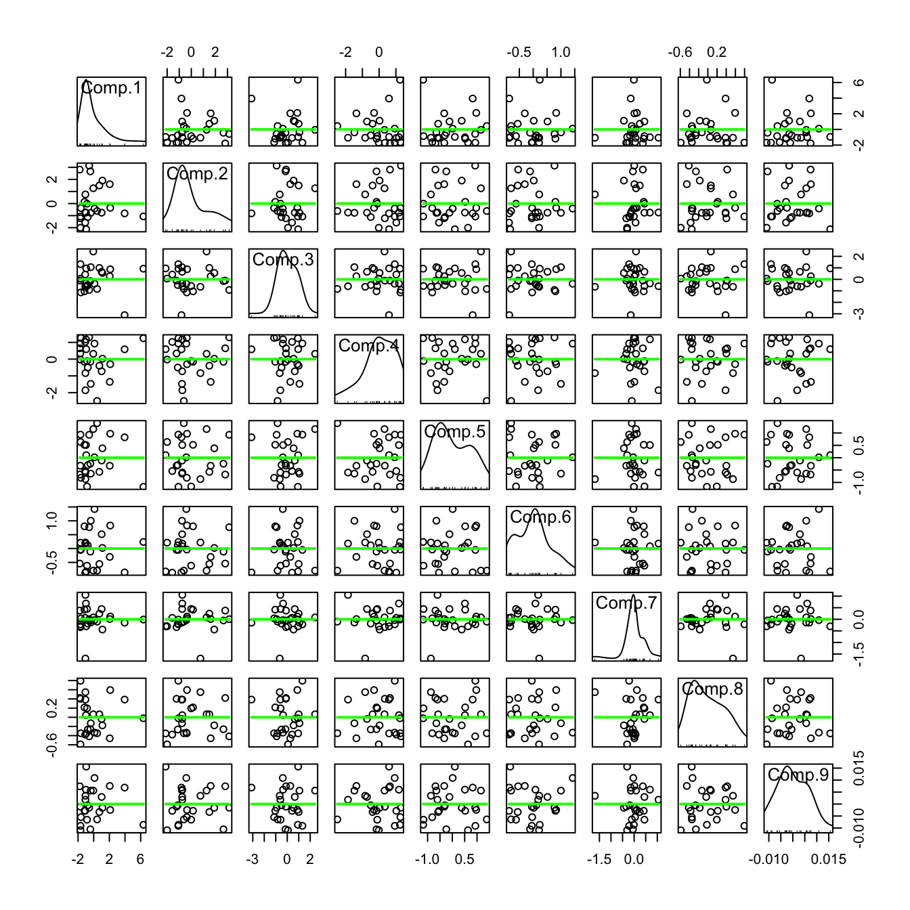

| Country | Agr | Min | Man | Pow | Con | Ser | Fin | Soc | Tra |
|---|---|---|---|---|---|---|---|---|---|
| Belgium | 3.3 | 0.9 | 27.6 | 0.9 | 8.2 | 19.1 | 6.2 | 26.6 | 7.2 |
| Denmark | 9.2 | 0.1 | 21.8 | 0.6 | 8.3 | 14.6 | 6.5 | 32.2 | 7.1 |
| France | 10.8 | 0.8 | 27.5 | 0.9 | 8.9 | 16.8 | 6.0 | 22.6 | 5.7 |
| WGerm | 6.7 | 1.3 | 35.8 | 0.9 | 7.3 | 14.4 | 5.0 | 22.3 | 6.1 |
| Ireland | 23.2 | 1.0 | 20.7 | 1.3 | 7.5 | 16.8 | 2.8 | 20.8 | 6.1 |
| Italy | 15.9 | 0.6 | 27.6 | 0.5 | 10.0 | 18.1 | 1.6 | 20.1 | 5.7 |
| Luxem | 7.7 | 3.1 | 30.8 | 0.8 | 9.2 | 18.5 | 4.6 | 19.2 | 6.2 |
| Nether | 6.3 | 0.1 | 22.5 | 1.0 | 9.9 | 18.0 | 6.8 | 28.5 | 6.8 |
| UK | 2.7 | 1.4 | 30.2 | 1.4 | 6.9 | 16.9 | 5.7 | 28.3 | 6.4 |
| Austria | 12.7 | 1.1 | 30.2 | 1.4 | 9.0 | 16.8 | 4.9 | 16.8 | 7.0 |
| Finland | 13.0 | 0.4 | 25.9 | 1.3 | 7.4 | 14.7 | 5.5 | 24.3 | 7.6 |
| Greece | 41.4 | 0.6 | 17.6 | 0.6 | 8.1 | 11.5 | 2.4 | 11.0 | 6.7 |
| Norway | 9.0 | 0.5 | 22.4 | 0.8 | 8.6 | 16.9 | 4.7 | 27.6 | 9.4 |
| Portugal | 27.8 | 0.3 | 24.5 | 0.6 | 8.4 | 13.3 | 2.7 | 16.7 | 5.7 |
| Spain | 22.9 | 0.8 | 28.5 | 0.7 | 11.5 | 9.7 | 8.5 | 11.8 | 5.5 |
| Sweden | 6.1 | 0.4 | 25.9 | 0.8 | 7.2 | 14.4 | 6.0 | 32.4 | 6.8 |
| Switz | 7.7 | 0.2 | 37.8 | 0.8 | 9.5 | 17.5 | 5.3 | 15.4 | 5.7 |
| Turkey | 66.8 | 0.7 | 7.9 | 0.1 | 2.8 | 5.2 | 1.1 | 11.9 | 3.2 |
| Bulgaria | 23.6 | 1.9 | 32.3 | 0.6 | 7.9 | 8.0 | 0.7 | 18.2 | 6.7 |
| Czech | 16.5 | 2.9 | 35.5 | 1.2 | 8.7 | 9.2 | 0.9 | 17.9 | 7.0 |
| EGerm | 4.2 | 2.9 | 41.2 | 1.3 | 7.6 | 11.2 | 1.2 | 22.1 | 8.4 |
| Hungary | 21.7 | 3.1 | 29.6 | 1.9 | 8.2 | 9.4 | 0.9 | 17.2 | 8.0 |
| Poland | 31.1 | 2.5 | 25.7 | 0.9 | 8.4 | 7.5 | 0.9 | 16.1 | 6.9 |
| Romania | 34.7 | 2.1 | 30.1 | 0.6 | 8.7 | 5.9 | 1.3 | 11.7 | 5.0 |
| USSR | 23.7 | 1.4 | 25.8 | 0.6 | 9.2 | 6.1 | 0.5 | 23.6 | 9.3 |
| Yugoslavia | 48.7 | 1.5 | 16.8 | 1.1 | 4.9 | 6.4 | 11.3 | 5.3 | 4.0 |
Lab: PCA
- You are free to apply this lab in or Python.
- In Python, you can use
sklearn.decomposition.PCAfor PCA or Prince library. - In , you are free to use
princomp(),prcomp()orfactominer::PCA().
The dataset
Employement in European countries in the late 70s
The purpose of this case study is to reveal the structure of the job market and economy in different developed countries. The final aim is to have a meaningful and rigorous plot that is able to show the most important features of the countries in a concise form.
The eurojob dataset 🔢 contains the data employed in this case study. It contains the percentage of workforce employed in 1979 in 9 industries for 26 European countries. The industries measured are:
- Agriculture (
Agr) - Mining (
Min) - Manufacturing (
Man) - Power supply industries
(Pow) - Construction (
Con) - Service industries (
Ser) - Finance (
Fin) - Social and personal services (
Soc) - Transport and communications (
Tra)
PCA
1. Import the eurojob dataset 🔢 .
If the dataset is imported correctly, then it should look like this:
2. Describe the dataset and make some hypotheses. You can for example:
- Calculate the measurements of each variable
- Calculate and visualize the correlation matrix
- Show the scatterplot matrix
- etc..
3. Apply PCA to the dataset. Show the variation explained by each of the principal components and the cumulative variation. Comment.
Important
Don’t forget to standardize the dataset, or to use the eigendecomposition of the correlation matrix instead of the variance-covariance matrix (no need to standardize in this case).
4. In the following plot, you see a scatterplot matrix of the principal components. What does the green lines correspond to? what do you notice?

The PCs are uncorrelated, but not independent (uncorrelated does not imply independent).
5. Plot the following:
- The scree plot.
- The graph of individuals.
- The graph of variables.
- The biplot graph.
- The contributions of the variables to the first 2 principal components.
Interpret the results (at least 3 interpretations).
PCA from scratch
6. Implement PCA on the eurojob dataset:
- Standardize the data.
- Obtain the Eigenvectors and Eigenvalues from the covariance matrix or correlation matrix.
- Extra: Verify that the variance-covariance matrix of the standardized data is equal to the correlation matrix for the unstandardized data, and that both yield the same igenvectors and eigenvalue pairs
- Sort eigenvalues in descending order and choose the \(k\) eigenvectors that correspond to the \(k\) largest eigenvalues, where \(k\) is the number of dimensions of the new feature subspace (\(k \le p\)).
- Construct the projection matrix \(\mathbf{A}\) from the selected \(k\) eigenvectors.
- Transform the original dataset \(X\) via \(\mathbf{A}\) to obtain a \(k\)-dimensional feature subspace \(\mathbf{Y}\).
- Visualize the graph of individuals. Compare with the graph obtained in question 5.
Eigendecomposition - Computing Eigenvectors and Eigenvalues
The eigenvectors and eigenvalues of a covariance (or correlation) matrix represent the “core” of a PCA: The eigenvectors (principal components) determine the directions of the new feature space, and the eigenvalues determine their magnitude. In other words, the eigenvalues explain the variance of the data along the new feature axes.
Extra: t-SNE
In this part, we are going to use a sample from the digits dataset. You can download the sample from here
The MNIST dataset contains tens of thousands of handwritten digits ranging from zero to nine. Each image is of size 28×28 pixels.
The following image displays a couple of handwritten digits from the dataset:

It is required to flatten the images from 28×28 to 1×784 (which is already done in the given csv).
- Load the dataset and describe it.
- Show some numbers like in the image above.
- Apply PCA and t-SNE on the dataset and visualize in 2D plot the observations. Label the points by coloring them or showing the corresponding letter. Compare the results.
- What is the effect of the perplexity parameter when using t-SNE?
If you use R, use the Rtsne package.
◼